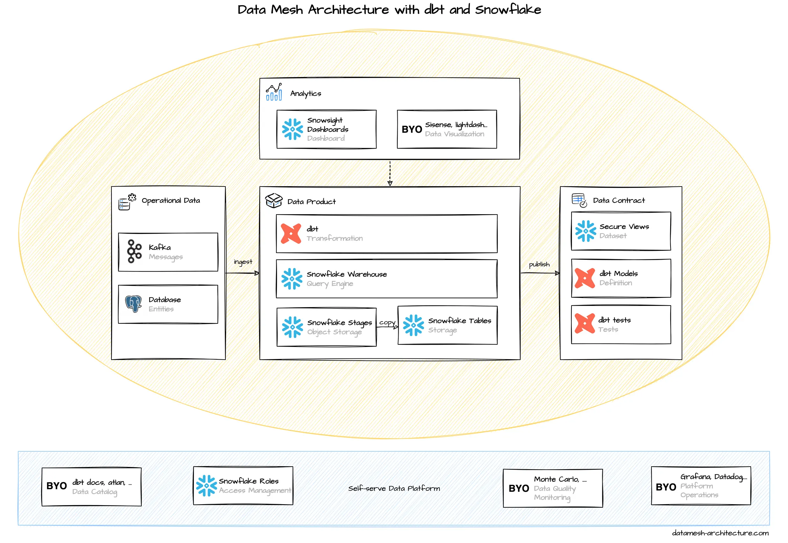

dbt has emerged as the default framework to engineer analytical data. This is where you define and test your models. Compare it with Spring Boot in the microservices world. dbt has adapters for most data warehouses, databases, and query engines.
Snowflake is a modern data warehouse. From a usage perspective, it feels like a traditional database. The key concepts to store and access data are tables and views, along with SQL queries. Snowflake can be compared with Google BigQuery, AWS Redshift and Azure Synapse, but each of them has a different pricing structures. Internally, Snowflake is built on cost-efficient object storage services (such as S3) to store data and compute instances (such as EC2) to execute queries and DML operations.
We think that Snowflake is a great fit for dbt, particularly through its simplicity, a fair pricing model, and extensive support from complementary tools.
dbt is a framework to transform, clean, and aggregate data within your data warehouse. Transformations are written as plain SQL statements and result in models that are SQL views, materialized views, or tables, without the need to define their structure using DDL upfront. Instead, models are defined, configured, and documented in simple YML structures. Models can refer to other models, and dbt builds a usage dependency graph before executing the models. The templating engine Jinja can be used to define these references and also build your own macros, that are reusable functions.

Also, dbt embraces tests to verify data when running any transformation, both for sources and results.
dbt tests can be added when defining a model, such as unique or not-null constraints.
More complex tests are written as SQL statements that need to return an empty result for a test to pass.
The extension dbt-expectations adds powerful test methods to verify the data quality.
dbt tests are great start to have data quality monitored.
Just run dbt test regularly through your CI platform or some other scheduler like cron or Airflow.

With data mesh, every domain team manages its own dbt project(s) and they own their CI pipelines to run the models.
When publishing models as data products, a model (usually a view) should be tagged as data_product, and it is a good idea to put them into a folder like /models/data_products/.
When using data products from other domains, they are defined in a source configuration file, and, again, tests can be used to verify the expectations, you have on the data set.
You can use
macros
and lifecycle hooks to automate policies that you agreed on in the federated governance group,
like granting and checking permissions, or hashing columns that are tagged as pii-sensitve data.

Snowflake stores data in tables that are logically organized in databases and schemas. Data is usually loaded into Snowflake using stages that are references to object stores (such as S3 buckets), either managed internally through Snowflake or external references. Pipes continuously copy these data into tables. There are pre-built solutions to ingest Kafka messages, and it is quite common to use a managed service like Fivetran or Stitch to replicate data from databases or SaaS providers, such as Google Analytics or Salesforce.

dbt transformations, data loads, and all other SQL queries are executed by a warehouse. Warehouses are compute instances, and the query performance scales with their underlying CPU cores and memory. Warehouses are charged while they are active. They can be configured to auto-suspend after a defined inactivity time period, which may provide significant savings. A warehouse can be attached to specific transformations and queries to give a high level of isolation.

How to organize domain teams and data? In Snowflake, data can be organized by these layers:
- Organization Account
- Account
- Databases (a database is just a logical grouping)
- Schemas (a schema is also just a logical grouping)
- Tables, Views, Sequence, Stages (references to files in an object store), ...
The simple option is one single account per environment for all teams and one logical database per team.
Teams can use schemas to internally organize their data.
Data products can be published in a special schema like DATA_PRODUCTS or just PUBLIC as secure views with appropriate permissions.
As permission management might get complex, an alternative is that each domain team has their own Snowflake account under the same organization account.
Data products can then be shared using Secure Data Sharing to give other accounts access.
Unfortunately, there is no simple way to share data across the whole organization, so a dbt hook or some terraform configurations are required.
This option enhances the isolation and security, as everything is clearly separated, but it is more management overhead to share and use data products.

Snowflake has no built-in data catalog to discover and govern published data products. For a start, the generated documentation of dbt models might be sufficient, when linked on a common wiki page. Most advanced data catalogs, such as atlan, integrated well, both in Snowflake and dbt projects.

Snowflake`s Web UI Snowsight has some basic support to visualize data in dashboards. Again, Snowflake integrates well with more advanced BI tools like Sisense, Tableau, or lightdash.

To monitor the platform itself, Snowflake comes with essential statistics on consumed credits, data storage and transfers. Resource monitors help to notify and suspend when a defined budget exceeds. More detailed usage, access history and especially query execution statistics are accessible through a system database via SQL. These can be integrated in monitoring tools, such as Grafana or Datadog.


{kind=link}